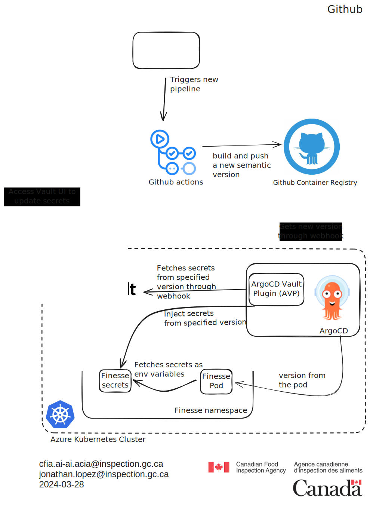
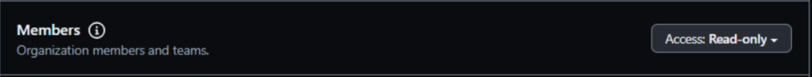
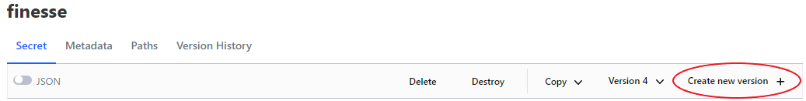

Gestion des secrets
Introduction
Les secrets sont des informations sensibles qui doivent être protégées contre tout accès non autorisé. Dans le contexte d'un cluster Kubernetes, les secrets sont utilisés pour stocker des données sensibles telles que des mots de passe, des jetons et des clés. Pour permettre une gestion sécurisée et efficace des secrets, nous utilisons HashiCorp Vault, un outil conçu pour gérer les secrets et protéger les données sensibles. Vault fournit un moyen centralisé de gérer l'accès aux secrets et aux clés de chiffrement, et il a également la capacité de générer des secrets dynamiques à la demande. Ce document fournit un aperçu du processus de gestion des secrets et du rôle de Vault dans la sécurisation et la gestion des secrets dans le cluster Kubernetes.
Architecture de Vault
Vault est un système hautement disponible et distribué conçu pour fournir un stockage sécurisé et une gestion des secrets. Il est basé sur une architecture client-serveur, avec le serveur étant le composant central qui stocke et gère les secrets, et les clients étant les applications et services qui accèdent aux secrets. Le serveur est responsable de l'authentification des clients, de l'autorisation de l'accès aux secrets, et de la fourniture de services de chiffrement et de déchiffrement. Le serveur est également responsable de générer des secrets dynamiques à la demande, qui sont de courte durée et sont automatiquement révoqués après une certaine période.
La configuration actuelle permet à Vault d'injecter des secrets dans les pods en utilisant le plugin ArgoCD Vault. Le plugin lit les espaces réservés dans les fichiers YAML et les remplace par les valeurs réelles des secrets provenant de Vault. Cela offre un moyen sécurisé de gérer les secrets dans le cluster Kubernetes et garantit que les données sensibles sont protégées contre tout accès non autorisé.
Le diagramme suivant illustre la structure de l'architecture Vault au sein de Howard: 
Le diagramme de séquence suivant décrit le processus permettant à un développeur de mettre à jour des secrets en utilisant le service UI de Vault et comment les secrets sont injectés dans les pods :
sequenceDiagram
participant Developer
participant FinesseRepo as Finesse Repository
participant GHWorkflow as GitHub Workflow
participant ContainerReg as GitHub Container Registry
participant HowardRepo as Howard Repository
participant ArgoRepoServer as ArgoCD Repo Server
participant ArgoVaultPlugin as Argo Vault Plugin
participant FinessePod as Finesse Pod
participant VaultUI as Vault UI
participant Vault as Vault Server
Developer->>+FinesseRepo: 1. Pushes commits
FinesseRepo->>+GHWorkflow: Triggers workflow
GHWorkflow->>+ContainerReg: Builds and pushes new semantic version
GHWorkflow->>+ArgoRepoServer: Triggers webhook
ArgoRepoServer->>+FinessePod: Triggers synchronisation to pod
FinessePod->>+ContainerReg: Fetches image with new version tag
FinessePod->>+FinessePod: Refreshes deployment with new version
Developer->>+VaultUI: 2. Accesses UI to update/create secrets
VaultUI->>+Vault: Commit update/creation of secrets
Developer->>+HowardRepo: 3. Commits new/updated secrets
HowardRepo->>+ArgoRepoServer: Triggers sync via webhook
ArgoRepoServer->>+ArgoVaultPlugin: triggers refresh on finesse namespace,<br> sync secrets from Vault
ArgoVaultPlugin->>+Vault: Fetch specific version of secrets
ArgoVaultPlugin->>+FinessePod: Injects secrets
Developer->>+FinessePod: 4. Trigger hard refresh through argoCDVeuillez noter que le développeur doit déclencher un rafraîchissement complet du pod pour refléter les modifications des secrets. Cela se fait dans l'interface utilisateur d'ArgoCD, mais nous travaillons sur un moyen d'automatiser ce processus.
Processus de gestion des secrets
The secret management process involves the following steps:
-
Création des secrets: Les secrets sont créés et stockés dans Vault en utilisant l'interface CLI de Vault ou l'API. Lorsqu'un secret est créé, il est chiffré et stocké dans le serveur central Vault.
-
Récupération des secrets: Les applications et services peuvent récupérer les secrets depuis Vault en utilisant l'interface CLI de Vault ou l'API. Lorsqu'un secret est récupéré, il est déchiffré et renvoyé au client de manière sécurisée.
-
Génération de secrets dynamiques: Vault has the ability to generate dynamic secrets on demand. This means that instead of storing static secrets in Vault, Vault can generate short-lived secrets that are automatically revoked after a certain period of time. This provides an additional layer of security and reduces the risk of unauthorized access to secrets.
-
Contrôle d'accès: Vault fournit un contrôle d'accès granulaire aux secrets, permettant aux administrateurs de définir des politiques qui spécifient quels clients peuvent accéder à quels secrets. Cela garantit que seuls les clients autorisés peuvent accéder aux données sensibles. Actuellement, nous utilisons la méthode d’authentification Kubernetes pour authentifier les applications hébergées et autoriser l'accès aux secrets. En ce qui concerne les utilisateurs humains, nous utilisons la méthode d'authentification GitHub pour authentifier et autoriser l'accès aux secrets.
Création, lecture, mise à jour et suppression des secrets
Vault fournit un service d'interface utilisateur pour gérer les secrets. Le service d'interface utilisateur est une interface utilisateur web qui permet aux administrateurs de créer, lire, mettre à jour et supprimer des secrets. Le service fournit également un moyen de gérer les politiques de contrôle d'accès et les journaux d'audit. Le service est accessible via un navigateur web et est protégé par les mêmes mécanismes de sécurité que le serveur Vault.
Étapes pour mettre à jour les valeurs des secrets en utilisant l'interface utilisateur de Vault
- Afin d'accéder au service d'interface utilisateur de Vault, vous devez disposer des autorisations appropriées et accéder à l'URL de Vault. Elle est actuellement configurée pour donner accès à tout membre de l'organisation ai-cfia sur Github.
- Générez un jeton d'accès personnel (PAT) sur GitHub et utilisez-le pour vous authentifier au service d'interface utilisateur de Vault. La portée du jeton devrait être: 
- Accédez au service d'interface utilisateur de Vault en naviguant vers l'URL de Vault dans un navigateur web. Vous serez invité à vous authentifier en utilisant votre jeton PAT de GitHub.
- Une fois authentifié, vous pourrez créer, lire, mettre à jour et
supprimer des secrets en utilisant le service d'interface utilisateur.
Il vous suffit de naviguer vers le moteur de secrets PV et de suivre le
chemin jusqu'aux secrets de vos applications. Le moteur de secrets PV est
un magasin clé-valeur qui vous permet de stocker et de gérer les secrets
pour vos applications.

- Une fois dans le répertoire des secrets de votre application, cliquez simplement sur 'create new version' (créer une nouvelle version) et vous pourrez ajouter, mettre à jour ou supprimer des secrets selon vos besoins.
Étapes pour mettre à jour les secrets injectés dans les pods
Pour mettre à jour les secrets qui sont injectés dans les pods, vous devez mettre à jour le manifeste des secrets pour l'application. Le manifeste des secrets est un fichier YAML qui définit les secrets qui sont injectés dans les pods en tant que variables d'environnement. Nous prendrons Finesse comme exemple.
- Ouvrez une issue avec le modèle suivant : Modèle de mise à jour des secrets. Vous pouvez ensuite créer une branche de travail à partir de l'issue.
- Ouvrir
/kubernetes/aks/apps/finesse/base/finesse-secrets.yaml. - Mettez à jour les références des clés de secrets selon les besoins. Par exemple, pour ajouter un nouveau secret, vous pouvez ajouter une nouvelle paire clé-valeur à la section data du manifeste des secrets :
FINESSE_BACKEND_AZURE_SEARCH_TRANSFORM_MAP: <FINESSE_BACKEND_AZURE_SEARCH_TRANSFORM_MAP>
La clé représente le nom de la variable d'environnement qui sera injectée dans le pod, et la valeur représente la clé du secret dans Vault qui sera utilisée pour récupérer la valeur du secret.
- Mettez à jour l'annotation de version des secrets récupérés depuis Vault :
# Augmentez la version du secret de
avp.kubernetes.io/secret-version: "4"
# À
avp.kubernetes.io/secret-version: "5"
Ceci est la nouvelle version que nous créons à l'étape 5 de la section précédente.
À titre d'exemple supplémentaire, voici un problème et une pull request qui illustrent le processus de mise à jour des secrets dans l'application Nachet :
Plugin Argo CD Vault (AVP)
Le argocd-vault-plugin
est utilisé pour gérer les secrets au sein de nos déploiements de manière
GitOps. Il permet d'utiliser des <placeholders> dans n'importe quel
fichier YAML ou JSON qui a été modélisé et fait usage d'annotations pour
fournir le chemin et la version d'un secret dans le Vault.
Un exemple d'utilisation est présenté dans l'application de démonstration. La documentation du plugin est bien expliquée et peut être suivie en fonction du cas d'utilisation nécessaire.